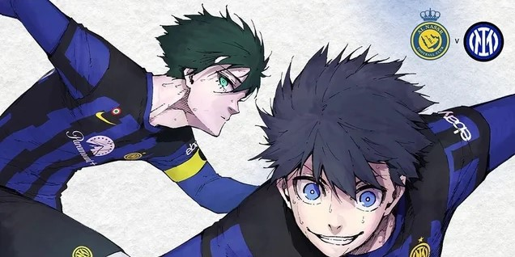

.png)
Noticia
Game
Inter de Milão anuncia parceria inusitada com Blue Lock.
O Inter de Milão está em turnê pelo Japão, então, nada melhor do que se juntar a um dos maiores mangás de futebol da atualidade: Blue Lock.
A equipe italiana Inter de Milão anunciou recentemente que deu início à uma parceria com o mangá de Blue Lock, que apresenta uma história focada em futebol.
A colaboração está gerando artes especiais que colocam os personagens do quadrinho japonês para vestir a camiseta da Inter de Milão.
A ideia faz parte das celebrações da turnê do clube italiano pelo Japão, que começou com uma partida amistosa contra Al Nassr no dia 27 de julho e deu um empate em 1x1.
Agora, a Inter teve um amistoso contra o Paris Saint-Germain nesta terça-feira (1) e divulgou novas artes da parceria, que foram feitas por Muneyuki Kaneshiro e Yusuke Nomura, criadores de Blue Lock.
Confira logo abaixo:

(Imagem: Site oficial da Inter de Milão/Divulgação)
O amistoso contra o PSG terminou em 2x1, com a vitória da Inter de Milão. Por fim, a Inter de Milão anunciou que lançará uma camiseta temática e exclusiva da colaboração com Blue Lock. A novidade deve chegar na loja oficial do clube nas próximas semanas. A segunda temporada e o filme de Blue Lock ainda não têm data de estreia. O anime está disponível na Crunchyroll.
Fonte: Inter de Milão